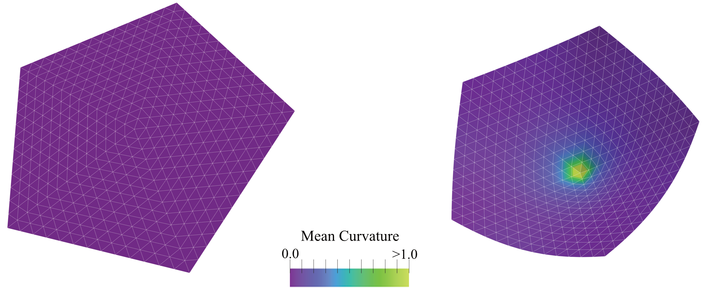

+1 Disclination Buckling: A PyMembrane Tutorial#

Figure: Snapshots of a Monte Carlo simulation of an open +1 disclination that shows buckling into a conical shape. (Left) the initial flat configuration; (Right) the relaxed buckled configuration. The colour bar represents the local mean curvature of the mesh.#
Introduction#
This example studies out-of-plane buckling of an open +1 disclination, a
standard thin-sheet mechanics problem. In the triangulated mesh, the central
vertex has five neighbours instead of six, which introduces the elastic
frustration that drives buckling into a cone-like shape.
What This Example Demonstrates#
All three packaged disclination examples use the same packaged input meshes
from InputFiles.zip and the same elastic forces: harmonic stretching, limit
protection, and dihedral bending. They differ only in the time-stepping or
sampling method:
pymembrane.examples.disclinationuses a Brownian vertex-move integrator.pymembrane.examples.disclination_mcuses a Monte Carlo vertex-move integrator with the documented annealing schedule.pymembrane.examples.disclination_verletuses a velocity-Verlet integrator.
Each version writes initial mesh.vtk and pentagon_t*.vtk snapshots. The
Monte Carlo version also writes final_mesh.vtk. --quick keeps the same
mesh, force model, and integrator choice, but reduces the number of steps and
snapshots.
The packaged module pymembrane.examples.hybrid_mc_bd demonstrates a
conservative hybrid workflow on the same physical problem. In each cycle it
first performs Brownian dynamics relaxation with
Mesh>Brownian>vertex>move and then performs Monte Carlo sampling with
Mesh>MonteCarlo>vertex>move before writing a VTK snapshot. --quick
reduces the number of hybrid cycles and the MD/MC step counts, but does not
change the mesh, forces, or integrator names.
How to Run#
Brownian version:
python -m pymembrane.examples.disclination --quick
Monte Carlo version:
python -m pymembrane.examples.disclination_mc --quick
Velocity-Verlet version:
python -m pymembrane.examples.disclination_verlet --quick
Hybrid Brownian + Monte Carlo version:
python -m pymembrane.examples.hybrid_mc_bd --quick
All three commands also support --output-dir:
python -m pymembrane.examples.disclination --quick --output-dir results
The hybrid example supports the same output-directory option:
python -m pymembrane.examples.hybrid_mc_bd --quick --output-dir results
Inputs#
packaged disclination meshes from
InputFiles.zipdefault mesh size parameter:
N=14output directory: current working directory unless
--output-diris used
Model Ingredients#
mesh: open
+1disclination fromdocs/examples/01_disclinationforces:
Mesh>Harmonic,Mesh>Limit,Mesh>Bending>Dihedralintegrators:
Brownian:
Mesh>Brownian>vertex>moveMonte Carlo:
Mesh>MonteCarlo>vertex>moveVelocity-Verlet:
Mesh>VelocityVerlet>vertex>moveHybrid: alternating
Mesh>Brownian>vertex>moveandMesh>MonteCarlo>vertex>move
Expected Output#
initial mesh.vtkpentagon_t0.vtkadditional
pentagon_t*.vtksnapshotsfinal_mesh.vtkfor the Monte Carlo versioninitial_mesh.vtkandhybrid_t*.vtkfor the hybrid exampleoutput format: legacy ASCII
.vtk
Quick Mode#
Quick mode keeps the same physical setup but reduces snapshot counts and the number of MD or MC steps.
The source versions of these examples are kept under docs/examples:
docs/examples/01_disclination/Brownian/disclination.pydocs/examples/01_disclination/MC/disclination.pydocs/examples/01_disclination/Verlet/disclination.py
The installed pymembrane.examples versions include the input data required
to run each example directly after installation.
How to visualize the result#
Open the VTK files in ParaView to inspect the development of the conical shape. Comparing the three integrator variants is useful for understanding how the same physical setup relaxes under different update rules.
References#
Seung, H. S., & Nelson, D. R. (1988). Microstructure of two-dimensional disclinations. Physical Review A, 38(2), 1005.
Nelson, D. R. (1987). Order, frustration, and defects in liquids and glasses. Physical Review B, 36(10), 5788.